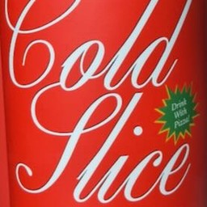
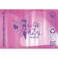
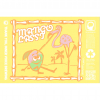

A Few Small Beers
Matt's 50th Birthday Beer Tasting · February 28, 2026
-

Cold SliceSuper crisp light lager. Corn and barley, naturally carbonated.
-
 Chimay Cinq CentsTrappist monks since 1862. Apricot, pear, peppery spice, dry finish.
Chimay Cinq CentsTrappist monks since 1862. Apricot, pear, peppery spice, dry finish. -
 Fair Isle LoraWild-fermented berry field blend. Raspberry, boysenberry, tart, refreshing.
Fair Isle LoraWild-fermented berry field blend. Raspberry, boysenberry, tart, refreshing. -

Love is RealMosaic, Nectaron, Simcoe Cryo. Dank citrus, hazy, pillowy mouthfeel.
-

Mango Lassi SunsetMega fruited with mango puree and fresh coconut. Tropical, tart, creamy.
-
 Fonta Flora CoracoidThe birthday closer. Barrel-aged barleywine meets imperial stout. Chocolate raisin, vanilla, bourbon.
Fonta Flora CoracoidThe birthday closer. Barrel-aged barleywine meets imperial stout. Chocolate raisin, vanilla, bourbon.
Tasting Notes · Untappd · Spotify
Cheers to 50, Matt!